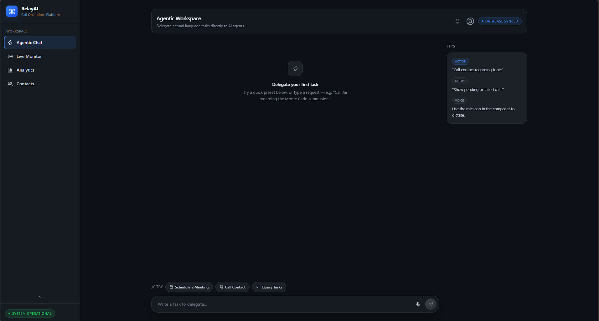
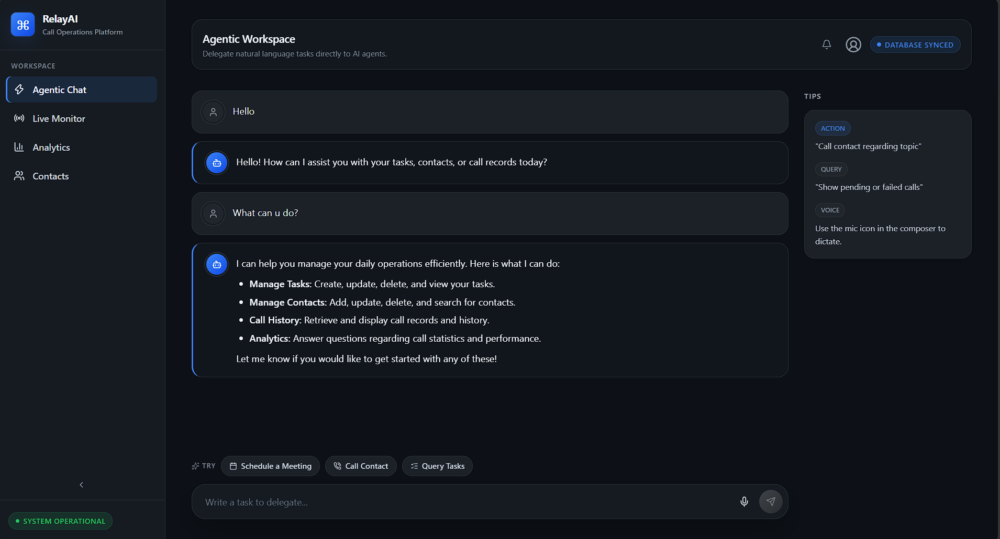
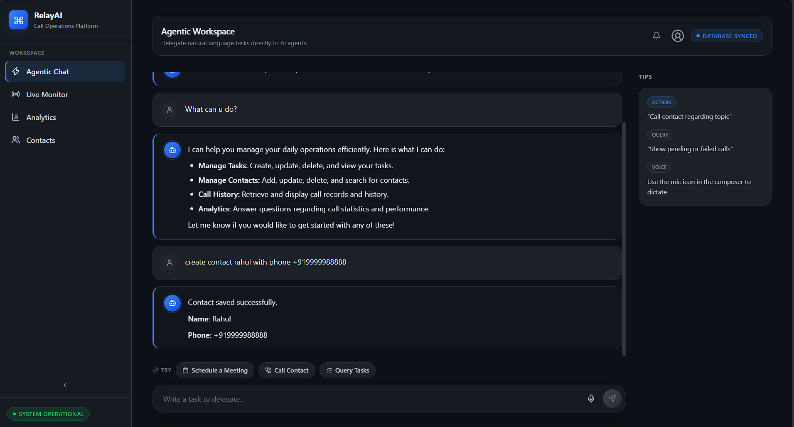

Training Company: Auribises Technologies
Trainer: Mr. Ishant Kumar
Today marked the successful completion of the Relay AI project and the final day of the Agentic AI with Python Summer Training. The session focused on refining the overall application, verifying communication between the React frontend and FastAPI backend, testing Firestore operations, and ensuring that every module of the platform worked together seamlessly. By the end of the session, Relay AI had evolved into a complete full-stack AI application capable of intelligent task delegation, automated calling, analytics, and contact management.
The frontend and backend modules were thoroughly integrated and tested to ensure reliable communication through REST APIs. Each application module—including the Agentic Workspace, Contact Directory, Live Monitor, and Executive Analytics—was verified to work correctly with FastAPI services and Firestore. Remaining issues discovered during testing were resolved to improve application stability and user experience.

End-to-end testing was performed across the entire platform. AI-generated tasks, contact management, automated phone calls, dashboard statistics, and conversation transcripts were verified to ensure that the complete workflow functioned as expected. Additional UI refinements and code cleanup improved readability, maintainability, and the overall quality of the project.

By the conclusion of development, Relay AI successfully combined multiple modern technologies into a single intelligent platform. Users can create and manage tasks using natural language, maintain a centralized contact directory, initiate AI-powered phone calls, monitor live execution status, retrieve detailed conversation transcripts, and analyze operational metrics through an executive dashboard. The project demonstrates how AI services, cloud databases, and modern web frameworks can be integrated to automate real-world business workflows.

Looking back at the past thirty days, this training has been one of the most valuable learning experiences of my academic journey. I began by strengthening my Python fundamentals and gradually progressed through object-oriented programming, data structures, databases, Streamlit development, Agentic AI concepts, OpenAI and Gemini integration, FastAPI, React, Firebase Firestore, Docker, and finally the development of a complete production-style AI platform.
Beyond learning new technologies, this journey improved my ability to design software architectures, integrate multiple services, debug complex systems, and build projects that resemble real-world industry applications. Developing Relay AI demonstrated how modern AI systems extend beyond simple chatbots and can automate practical workflows by combining intelligent agents with cloud technologies and scalable web development frameworks.
Completing the Agentic AI with Python Summer Training has significantly enhanced my technical knowledge and practical software development skills. Throughout this journey, I maintained this training diary to document every concept, implementation, challenge, and milestone. It serves not only as a record of my learning but also as a reflection of my growth as a software developer. I look forward to applying these skills to future projects, internships, hackathons, and real-world AI solutions.